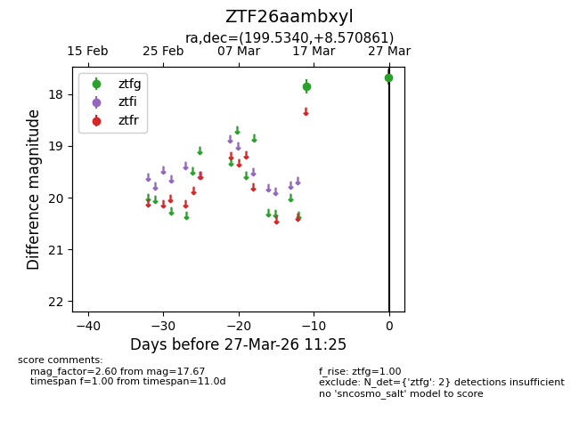
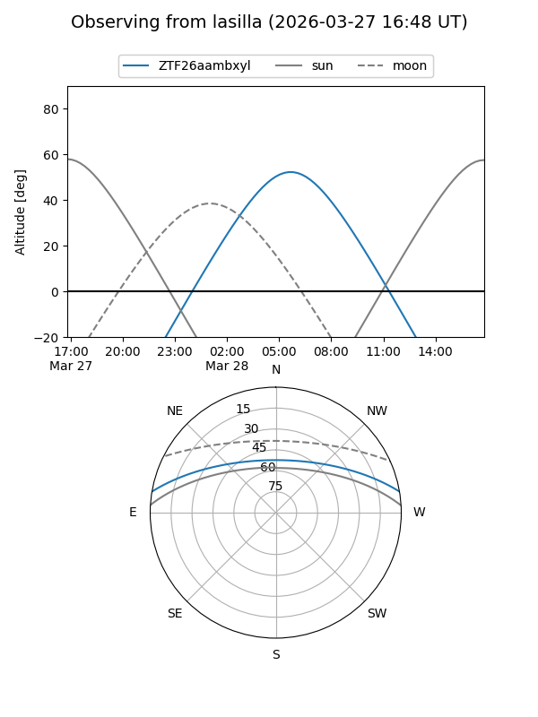
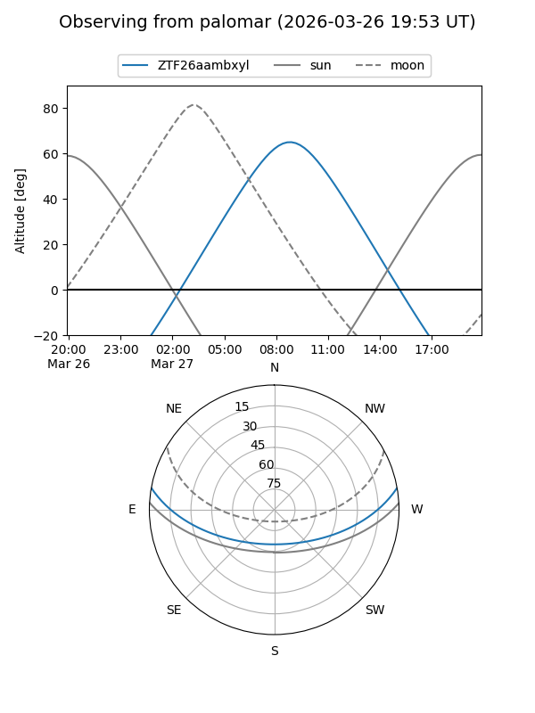

ZTF26aambxyl
Target ZTF26aambxyl at 2026-03-27 11:28
Aliases and brokers:
FINK: link
Lasair: link
ALeRCE: link
alt names
ZTF26aambxyl (ztf,fink_ztf)
Coordinates:
equatorial (ra, dec) = 199.5340,+8.57086
equatorial (HMS+DMS) = 13:18:08.17,+08:34:15.10
galactic (l, b) = (322.9655,+70.39713)
Flags:
Photometry:
last ztfg=17.67
2 ztfg detections
Lightcurve

Visibility


Additional plots